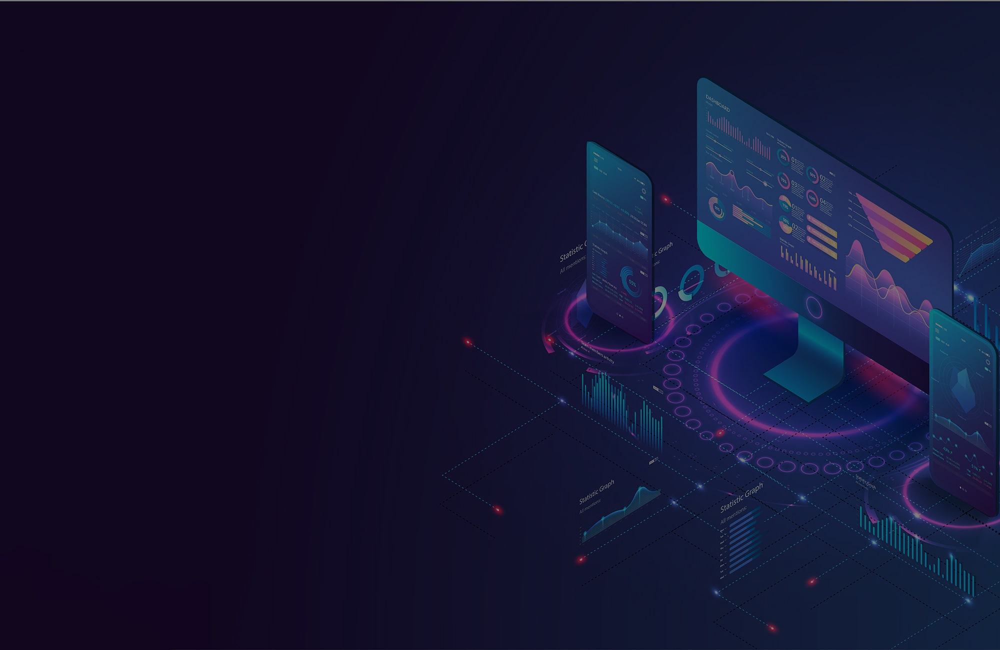

Hello, I'm Loveth Oballe Ayuknteck, a seasoned DevOps engineer passionate about streamlining software development and deployment pipelines to enhance efficiency, reliability, and scalability. With 7 years of hands-on experience in the industry, I've had the privilege of working on a diverse range of projects, from startups to enterprise-level applications.
My mission is to bridge the gap between development and operations, ensuring that software delivery is not only faster but also more robust. I thrive on solving complex challenges and thrive in dynamic environments where innovation is key.
CI/CD Expertise:
I specialize in designing and implementing robust CI/CD pipelines that automate testing, build, and deployment processes, reducing time-to-market and minimizing errors.
Infrastructure as Code (IaC):
I'm proficient in using tools like Terraform and Ansible to manage infrastructure, making it more predictable and scalable.
Containerization and Orchestration:
I have hands-on experience with Docker and Kubernetes, enabling the efficient deployment and management of containerized applications.
Monitoring and Logging:
I'm skilled in setting up comprehensive monitoring and logging solutions to proactively detect and address issues in real-time.
Collaboration:
I excel in fostering collaboration between development and operations teams, promoting a DevOps culture that emphasizes communication and shared responsibility.
Languages: Bash, Python
Tools: Jenkins, Git, AWS, Azure, Terraform, Argocd, Kubernetes, Github actions, Prometheus, Grafana, Docker, Helm, Harness, Ansible
Certifications: CKA, RHCSA, Terraform associate
I'm always eager to collaborate on exciting projects or discuss innovative solutions to DevOps challenges. Feel free to reach out to me via LinkedIn or Email to explore opportunities or simply chat about all things DevOps.
Thank you for visiting my portfolio. Together, let's build a more efficient and agile software development ecosystem!
Phone: (123) 456-7890 | Address: 123 Main St, City | LinkedIn
Highly skilled and experienced DevOps Engineer with a proven track record of implementing and managing DevOps processes and tools. Adept at automation, CI/CD pipelines, and cloud infrastructure using AWS and GCP. Proficient in Terraform, Git, Bash, Linux, Python, Ansible, Jenkins, ArgoCD, and more.
Company XYZ - Anytown, USA | January 2018 - Present
Company ABC - Anothercity, USA | June 2014 - December 2017
Company ABC - Newcity, USA | June 2010 - December 2013
This project focuses on setting up a CI/CD pipeline using Jenkins for automating software delivery.
This project demonstrates how to manage cloud infrastructure using Terraform.
This project focuses on containerization of microservices using Docker.